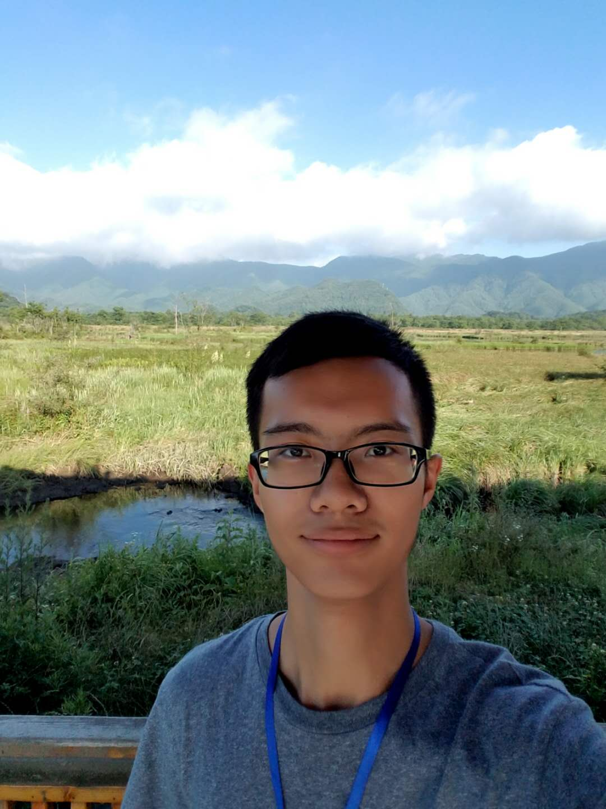

Qiushi YangPh.D. Candidate
Department of Electrical Engineering, |
 |
About Me
I am a third-year Ph.D student in the Department of Electrical Engineering, City University of Hong Kong, supervised by Prof. Yixuan YUAN. Before that, I received the B. Eng degree from School of Computer Science and Engineering in Northeastern University of China in 2019.
My research interests lie in computer vision and trustworthy machine learning, with a focus on medical image analysis, semi/self-supervised learning, federated learning and semantic segmentation.
If you would like to chat with me about any interesting topics or questions on computer vision related, please don't hesitate to contact with me via email!
News
[Feb 2023] One paper accepted by IEEE TMI 2023. (CCF B, IF. 11.037).
[Jun 2022] One paper accepted by MICCAI 2022 (CCF B).
[May 2022] One paper accepted by IEEE TMI 2022. (CCF B, IF. 11.037).
[Mar 2022] One paper accepted by CVPR 2022 (CCF A).
[Jul 2021] Pass the Ph.D. Qualify Examination.
[Jul 2020] Finish the exciting internship in Meituan-Dianping.
[Jun 2019] I graduate from the School of CSE in NEU and receive B.Sc. degree.
Selected Publications
-
Hierarchical Bias Mitigation for Semi-Supervised Medical Image Classification [Code]
Qiushi Yang, Zhen Chen, Yixuan Yuan.
IEEE Transactions on Medical Imaging (IEEE TMI), 2023.
-
Semi-Supervised Medical Image Classification with Temporal Knowledge-Aware Regularization [Code]
Qiushi Yang, Xinyu Liu, Zhen Chen, Yixuan Yuan.
International Conference on Medical Image Computing and Computer Assisted Intervention (MICCAI), 2022.
-
D2-Net: Dual Disentanglement Network for Brain Tumor Segmentation With Missing Modalities [Code]
Qiushi Yang, Xiaoqing Guo, Zhen Chen, Peter Y. M. Woo, Yixuan Yuan.
IEEE Transactions on Medical Imaging (IEEE TMI), 2022.
-
Towards Robust Adaptive Object Detection under Noisy Annotations [Code]
Xinyu Liu, Wuyang Li, Qiushi Yang, Baopu Li, Yixuan Yuan.
IEEE Conference on Computer Vision and Pattern Recognition (CVPR), 2022.
-
Learning Dynamic Convolutions for Multi-modal 3D MRI Brain Tumor Segmentation
Qiushi Yang, Yixuan Yuan.
International Conference on Medical Image Computing and Computer Assisted Intervention Brainlesion Workshop (MICCAI Workshop), 2020.
-
Detection of Rail Surface Defects Based on CNN Image Recognition and Classification
Lidan Shang, Qiushi Yang, Jianing Wang, Shubin Li, Weimin Lei.
IEEE International Conference on Advanced Communications Technology (ICACT), 2018 (Oral).
Experience
- Meituan-Dianping, Auto-Driving Group, Beijing, Feb. 2020 - Jul. 2020
Research Intern
Advisor: Prof. Mingyu Fan
- Westlake University, Hangzhou, Zhejiang, Aug. 2019 - Nov. 2019
Research Assistant
Advisor: Prof. Stan Z. Li
- Horizon Robotics, AIoT Group, Beijing, Jan. 2019 - Apr. 2019
Research Intern
Advisor: Mengjia Yan
Selected Awards
Northeastern University Outstanding Student Scholarship, 2016-2017
1st-Level Prize on National Mathematic Contest in Liaoning for Undergraduate Students, 2016
Teaching
EE3001: Foundations of Data Engineering, 2021, 2022 Fall, CityU.
EE5805: Java Network Programming, 2022, 2023 Summer, CityU.
Services
Conference Reviewer: ICCV'23, CVPR'22,23, ECCV'22.
Journal Reviewer: TMI, TNNLS